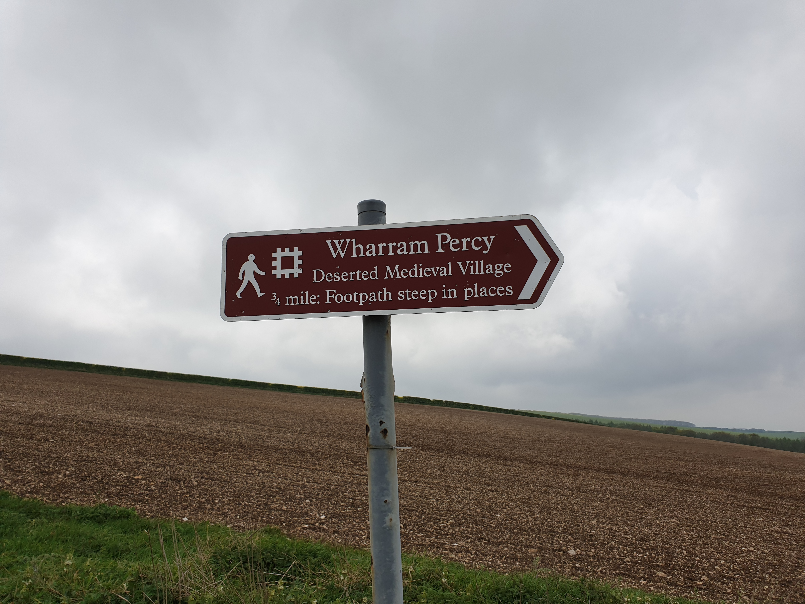
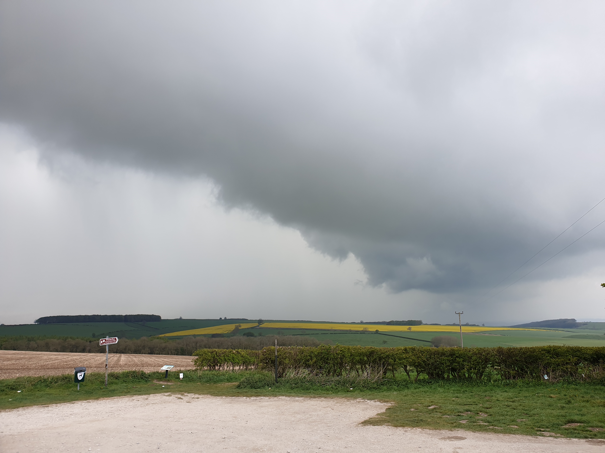

Left Tiggy in the car park which is a little bit of a walk away from the medieval village.


The footpath is mainly gravel but does have a few grassy muddy bits.

You then get to Wharram Percy which is a mix of this building, a church, a lake and some medieval ruins.


All that remains of the village itself are these mounds and wall remains..

Got back to the carpark just as the sky turned dark and it looked like the heavens were about to open.
